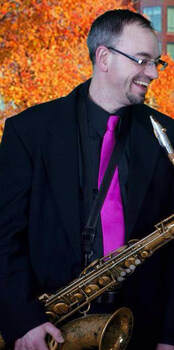
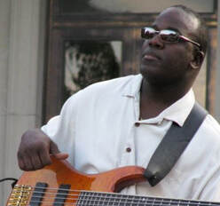
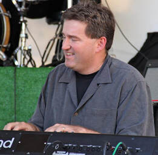
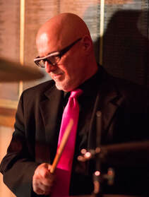
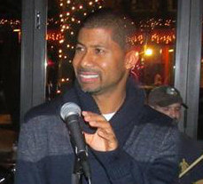
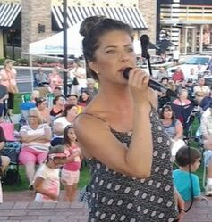
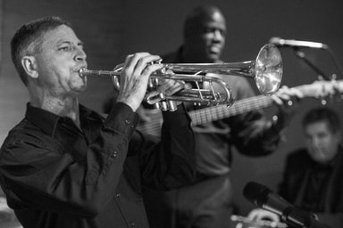

Dan Reynolds - Sax

In 1992 Dan Reynolds was an alto saxophonist in the “Walt Disney World All-American College Jazz Band” in Orlando, Florida. During this tenure he performed and attended clinics with jazz artists such as Tom Scott, Arturo Sandoval, Pete Christlieb and Maynard Ferguson. In 1993 he performed for various shows in Busch Gardens, Williamsburg, Virginia. From 1993 to 2002 he served as alto and tenor saxophonist, arranger and composer with “Steve Smith and The Nakeds” performing with such popular artists as Clarence Clemons, Nils Lofgren, John Cafferty, Michael Antunes, Al Cooper, and Gary U.S. Bonds. “The Nakeds” performed throughout the United States and Canada, including a performance for President Bill Clinton in 1994. Dan completed graduate studies at The University of Rhode Island for saxophone performance and has performed with numerous premier New England groups.
Dave Wilson - Bass

Dave has been playing bass since the age of 10. He was hooked on the instrument after hearing Verdine White of Earth, Wind & Fire. That particular feel and groove shaped his approach for years to come. In addition to Verdine, David is heavily influenced by Anthony Jackson, Abe Laboriel, and Maurice Fitzgerald. Dave can be seen and heard anchoring the groove with the Down City Band.
Paul Duquette - Keys

Paul Duquette is a Berklee College of Music graduate and has been an in-demand working musician for more than 20 years. His styles range from jazz and classical to oldies, funk, and blues. Paul is an integral part of DownCity as he can perform ceremonial music, cocktail hour sets, and high-energy reception arrangements. Outside of the live performance scene, Paul teaches private piano lessons and serves as a cathedral organist.
Jeff Shea - Guitar
Jeff Shea has performed with numerous bands at both the national and local levels for over 35 years. On the national scene, Jeff has performed with Little Anthony, The Marvelettes, The Coasters, and The Drifters. Locally, he has performed with many established New England groups across funk, disco, and rock genres. Jeff formally studied guitar at the Berklee College of Music, where he earned a Bachelor of Arts in music.
Bob Maddalena - Drums

Bob has worked the club scene, college circuits, and national events for over 35 years. Formerly a member of the legendary rock band Strutt, New England's premier oldies band Reminisce, and Orchestra Romanza, Bob has shared the stage with and opened for national acts such as Aerosmith, Loverboy, The Temptations, Little Richard, and Frankie Valli. Known for his diverse style, Bob supplies the solid backbeat for DownCity Band.
Maceo Eberhart - Vocals

Maceo started out singing solo at weddings, fundraisers, and live events, but it was not until hearing Otis Redding that he realized he wanted to sing professionally. In 2012, Maceo became the lead vocalist for The Ghost Tones. His soulful voice, warm stage presence, and magnetic energy consistently keep dance floors packed. His major musical influences include Otis Redding, The Isley Brothers, and War.
Jessica Tracy - Vocals

Jess started singing at the age of four at St. Mark's Church in Riverside, RI. At age 6, her father taught her recorder, keyboard, and singing in their family bluegrass band. Her performance background spans choirs, musicals, and professional New England circuits. Audience members love Jessica's powerful vocal range and infectious stage energy.
Don Chilton - Trumpet

Don Chilton is a retired Navy Musician with a distinguished 26-year career traveling worldwide to over 42 countries as a trumpeter, vocalist, and bandleader. Don serves as band director and music teacher for Newport Public Schools and has performed at the Newport Jazz Festival, alongside legendary acts like The Temptations. Don also proudly serves his nation as a bugler with the RI Military Funeral Honors.